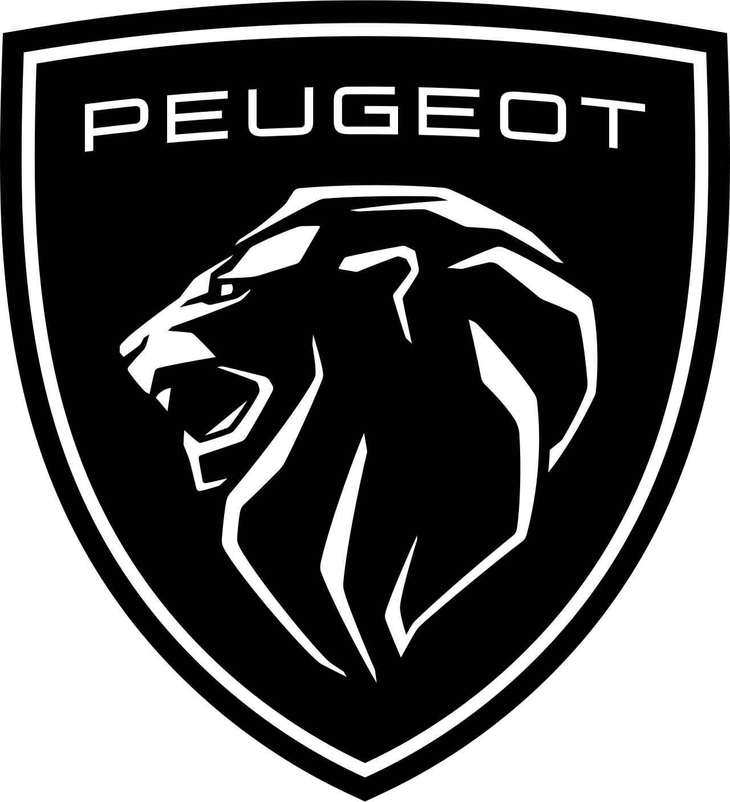

Proyecto destacado
Gestor dinámico de eventos
Aplicación web desarrollada en JavaScript para gestionar eventos en tiempo real. Permite añadir, eliminar y visualizar eventos de forma dinámica, enfocada en experiencia de usuario y simplicidad.

Mi trayectoria profesional nace en el sector audiovisual, donde durante años he trabajado en entornos reales, gestionando proyectos, clientes y producciones de alto nivel en conciertos, festivales y eventos corporativos.
Esta experiencia me ha permitido desarrollar una mentalidad orientada a la resolución de problemas,
adaptación constante y trabajo bajo presión.
Actualmente me estoy formando como desarrollador web, construyendo proyectos con HTML, CSS y JavaScript,
y ampliando conocimientos en Python y Java.
Productora audiovisual para empresas, artistas y marcas. Desarrollo proyectos end-to-end combinando creatividad y ejecución.
Producción audiovisual con el Mago Yunke. +350 funciones y gestión de contenido digital.
+200 aftermovies y contenido para giras y festivales. Alcance superior a 250.000 visualizaciones.
Fotografía en TV, publicidad y cine. Participación en La Casa de los Retos.
Formación full-stack en desarrollo web con tecnologías actuales.
Producción y coordinación de proyectos audiovisuales en directo.
Formación en fotografía, iluminación y narrativa visual.
Aplicación web desarrollada en JavaScript para gestionar eventos en tiempo real. Permite añadir, eliminar y visualizar eventos de forma dinámica, enfocada en experiencia de usuario y simplicidad.
Desarrollo de interfaces modernas con HTML, CSS y JavaScript, enfocadas en experiencia de usuario y rendimiento.
Experiencia real en proyectos con clientes, festivales y artistas internacionales, creando contenido visual que conecta y genera impacto.
Organización, ejecución y entrega de proyectos en entornos reales, cumpliendo deadlines y objetivos de cliente.





BIG School — marzo 2026
Actualmente abierto a oportunidades como desarrollador junior o colaboraciones en proyectos digitales.
ContactarDisponible para oportunidades como desarrollador junior o colaboraciones en proyectos digitales.